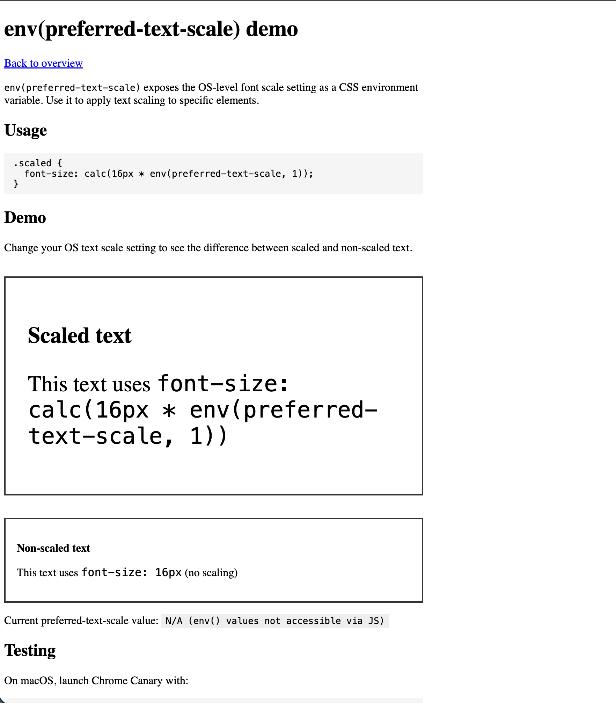
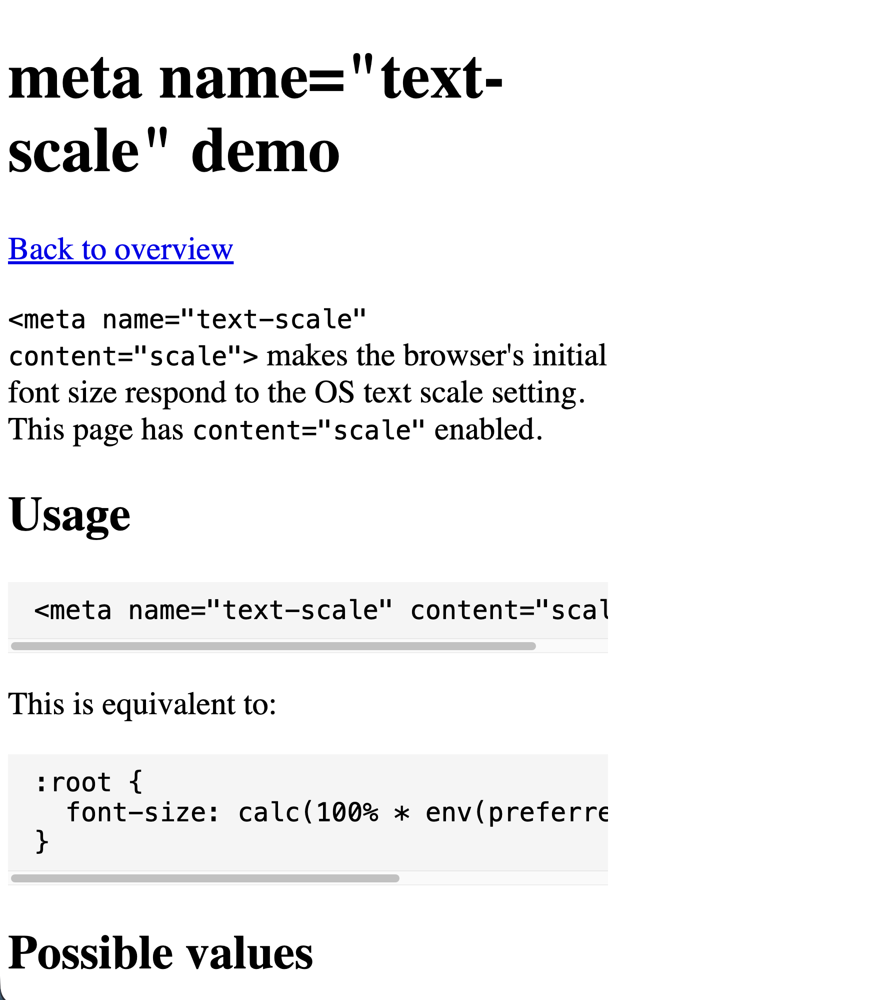

Summary: Features to reflect OS text size settings (e.g., Android/iOS accessibility settings) in web content. Previously, browsers other than Safari ignored OS settings to avoid layout breakage.
env(preferred-text-scale): Exposes OS scale value as a CSS environment variable. Use for
partial application.<meta name="text-scale" content="scale">: Applies OS settings to the entire page
(opt-in).
Implicitly equivalent to :root { font-size: calc(100% * env(preferred-text-scale, 1)); }.content="legacy": Maintains legacy behavior (ignores OS settings). Current default (2026/04/05)
Default./Applications/Google\ Chrome\
Canary.app/Contents/MacOS/Google\
Chrome\ Canary \
--blink-settings=accessibilityFontScaleFactor=2.0 \
--enable-experimental-web-platform-features| env | meta |
|---|---|
 |
 |
This is a demo for env(preferred-text-scale) and <meta name="text-scale">
Try it in Chrome 138+ (env) / Chrome 139+ (meta).